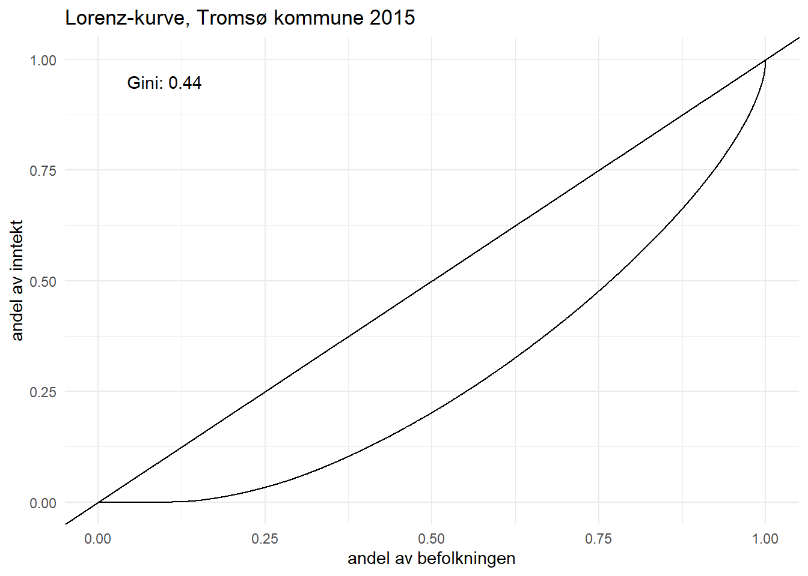

Code
rm(list=ls())
library(tidyverse)
library(gglorenz)For å gå tilbake til hovedsiden trykker du her.
Hva menes med inntektsulikhet i et land?
Inntektsulikhet i et land er hvordan den totale inntekten er fordelt over befolkningen. Mer ujevn fordelt inntekt betyr at inntektsulikheten er høyere. Fordelingen av inntekt kan undersøkes på flere måter, hvor de mest brukte måtene å undersøke inntektsulikhet på er ved Gini-koeffisienten, S80/S20 og P90P10.
En normal måte å måle inntektsulikhet på er at man deler inn husholdningene i ti kategorier (desiler), rangert fra lavest til høyest, og måler desilene mot hverandre for å få en oversikt over inntektsulikheten.
Hva er mulige grunner for at inntekten er fordelt ulikt i samfunnet?
En mulig grunn kan være den teknologiske revolusjonen, ettersom samfunnet trenger flere mennesker med høyere utdanning og kompetanse. Dette gjør at andelen jobber der det kreves middels kompetanse blir mindre, mens andelen sysselsatte i topp av kompetanse går opp, som gjør at inntektene blir mer ulikt fordelt. Inntektene i teknologiske bransjer som IT og finanssektor har gått opp, mens lavt kvalifisert arbeidskraft ikke har klart å følge etter.
Den teknologiske revolusjon har hatt stor effekt av globaliseringen, der teknologi har gjort det slik at sluttproduktet i verdikjedene nå kan ha samarbeid mellom land. Produksjon kan eksempelvis flyttes til land hvor arbeidskostnadene per produsert enhet er lave, og arbeiderne er lavt lønnet, mens de på toppen av verdikjedene får inn mesteparten av inntektene.
En annen mulig grunn kan være (NSW – Non Standard Work). Dette vil si selvstendig næringsdrivende, midlertidig ansatte eller deltidsansatte. NSW-ansatte har siden 1990-tallet stått for 60 prosent av jobbveksten, men NSW-ansatte blir betalt mindre selv om de gjør samme arbeid som fast ansatte. (kilde: nho_perspektivmeldingen_6_okende-ulikhet, side 156). NSW-jobber øker sysselsatte i bunnen av inntektsskalaen, og øker dermed også ulikheten av inntekt i samfunnet.
En til årsak kan være innvandring. En innvandrer står ikke på lik linje for høyere inntekt sammenlignet med en person som er født statsborger, og ikke alle innvandrere klarer å etablere seg like godt i samfunnet. I Norge er kun 68,9 prosent av innvandrere sysselsatt, mot 79,2 prosent av den øvrige befolkningen. Innvandrere tjener også mindre enn resten av befolkningen med samme utdanningsnivå. Størst forskjell finner man med personer som har fullført videregående, hvor inntektene til innvandrere var 18 prosent mindre enn nordmenn. (SSB, 2022)
Hvilke konsekvenser kan ulikhet i inntektsfordelingen føre til?
Først og fremst så kan en konsekvens av ulikhet i inntektsfordelingen gjøre slik at det blir vanskeligere for mennesker nederst i samfunnet å skape gode liv for seg selv og sine egne. Personer med lavere inntekter har dårligere levestandard, og vil også få forventet kortere levealder. (Økende ulikhet, s. 162).
En annen konsekvens av økende inntektsulikhet kan være at de som er nederst i inntektsstigen får mistro til staten i landet og ønsker bedre fordelingspolitikk, siden de føler seg utelatt fra den økonomiske veksten.
Økonomisk inntektsulikhet kan gi lavere etterspørsel etter varer og tjenester i samfunnet, ettersom de med minstelønn får mindre kjøpekraft, og er de i samfunnet som er størst konsumenter. (Økende ulikhet, s. 163).
Inntektsfordelingen kan også føre til positive endringer. Økonomiske insentiver kan være med å påvirke studenter til å studere for å få mer inntekt i fremtiden, eller en arbeider til å jobbe hardt for å få bedriften sin til å tjene mer penger. Når det er muligheter i samfunnet til å øke inntekt med høyere utdanning eller gjennom hardt arbeid kan det gi tilbake innovasjon og vekst. (19. economic inequality)
Forklar hvordan Gini-koeffisientene beregnes og hvordan de bør tolkes. Hva måler P90P10 og S80S20?
Gini-koeffisienten gir oss et enkelt mål på graden av ulikhet i form av et tall mellom 0-1. Hvis alle har lik inntekt, får Gini-koeffisienten verdien 0. Om en enkel person mottar all inntekt, får gini-koeffisienten sin maksimale verdi, som er 1.
P90P10 sorterer befolkningen etter størrelse på inntekt og skatt og deler befolkningen opp i ti like store grupper (kalt desiler) etter hvor mye inntekt de har. For å beregne P90P10 tar man forholdstallet mellom personen som befinner seg mellom desil 9 og 10, målt mot personen som befinner seg på desil 1 og 2. Det tallet x som kommer ut når man beregner dette betyr at person på P90, har x ganger inntekt til person som befinner seg på P10.
S80/S20 viser forholdstallet mellom gjennomsnittsinntekten til de 20% av befolkningen som har høyest inntekt, og gjennomsnittsinntekten til de 20% som har lavest inntekt. De aller rikeste og fattigste blir tatt med, noe som gjør at forholdstallet blir større enn P90P10.
Siden Gini-koeffisienten er et enkelt tall på graden av ulikhet bør den bli fremstilt sammen med andre målinger for ulikhet, slik som P90P10 og S80/S20. Målingene er god for å tolkes over tid, og tolkes over land.
Gini-koeffisienten utregnes som A / (A + B) = Gini.
A er arealet av området på Lorenz-kurven delt på arealet av trekanten til Lorenz-kurven under 45-graders linjen. På figuren nedenfor vil A være i Lorenz-kurven, og B vil være under Lorenz-kurven.
rm(list=ls())
library(tidyverse)
library(gglorenz)url <- "https://raw.githubusercontent.com/uit-sok-1004-h22/uit-sok-1004-h22.github.io/main/data/skatt_troms_2015.RDS"
skatt_troms_2015 <- url %>%
url() %>%
gzcon() %>%
readRDS()# Eksempel på Gini, med Lorenz-kurve
harstad <-filter(skatt_troms_2015, kommnr == "1903")
ggplot(harstad, aes(inntekt))+
stat_lorenz()+ # tegner Lorenz
annotate_ineq(harstad$inntekt)+ # beregner Gini
labs (title = "Eksempel på lorenz-kurve")+
geom_abline() +
geom_vline(xintercept= 1, linetype= "dashed") +
theme_minimal()Diskuter svakheter og styrker med disse målene på ulikhet. I hvilke situasjoner er hvert mål mest relevant?
Gini-koeffisienten er en matematisk formel for ulikhet som gir et tall mellom 0 og 1. En styrke med Gini-koeffisienten er at den kan brukes for å få en oversikt over økonomisk ulikhet mellom land og over tid. En svakhet med gini-koeffisienten er at alt for mye informasjon oppsummeres i et enkelt tall. Dette gjør at det finnes mye informasjon i utregningen som man ikke klarer å observere med Gini-koeffisienten alene.
P90P10 er en måling for ulikhet som tar for seg forholdstallet mellom desil 9 (P90) og desil 1(P10), det vil si de som er rett under de rikeste og rett over de fattigste. Dette er en god måling på ulikhet hvis man vil ekskludere ekstreme observasjoner.
S80S20 viser forholdstallet av gjennomsnittsinntekten til de 20 prosent rikeste og de 20 prosent fattigste. Dette er også styrken til denne målingen, da man får med alle observasjoner fra toppen og bunnen i målingen. Svakheter med denne målingen er at du får datapunkter (inntekt) som stikker seg veldig ut inn i observasjonen, og den er heller ikke god på å måle observasjoner som ligger på midten av inntektsskalaen. Dette er også en svakhet med alle tre målingene.
url <- "https://raw.githubusercontent.com/uit-sok-1004-h22/uit-sok-1004-h22.github.io/main/data/oecd_data_nor.csv"
oecd_n <- url %>%
read_csv()oecd_n %>%
rename("År" = "Year", "Målinger" = "MEASURE", "Verdi" = "Value") %>%
filter(Målinger %in% c("GINI", "GINIB", "GINIG")) %>%
ggplot(aes(x= År, y= Verdi, color= Målinger)) +
theme_minimal()+
geom_point() +
scale_x_continuous(breaks=c(2008, 2012, 2015, 2018)) +
facet_wrap(~ factor (AGE, (levels=c("TOT", "WA", "OLD"))),
labeller = as_labeller(
c("TOT" = "Alle",
"WA" = "Arbeidere",
"OLD" = "Pensjonister"))) +
theme(legend.position = "bottom") +
expand_limits(y=0.1) +
labs(title = "Gini verdier i Norge", x="") +
theme(plot.title = element_text(size = 20),
plot.subtitle = element_text(size = 10))Gi en nøyaktig beskrivelse av figuren med de tre Gini-målene. Bruk figuren til å svare på følgende spørsmål:
Figuren viser Gini-koeffisient på vertikal akse og årstall på horisontal akse. Det er tre forskjellige Gini-utregninger av inntekter som måles. Figuren viser endringer i inntektsulikhet for arbeidere, pensjonister og alle over 11 år.
Hva viser Gini-målene om utviklingen av ulikhet i Norge?
Gini-målene viser at pensjonister har størst ulikhet i markedsinntekt før skatt og overføringer. Den viser også at inntektsulikheten i Norge øker smått fra 2008 til 2015, men har en synkende trend etter 2015. Pensjonister har størst endring i inntektsulikheten i 2015 før skatt og overføringer, og årene etter. Dersom man ser på disponibel inntekt så er den for eksempel lik i 2008 og 2019, selv om Gini-verdien i markedsinntekt før skatt og overføringer er gått opp fra 2008.
Hvordan forklarer man eventuelle forskjeller mellom de tre Gini-koeffisientene?
Den røde målingen som heter GINI er Gini-koeffisienten regnet ut ifra disponibel inntekt etter skatt og overføringer.
Den grønne målingen, som heter GINIB er Gini-koeffisienten regnet ut ifra markedsinntekt før skatt og overføringer. Med markedsinntekt tas også inntekten med fra verdiskapningen i den løpende produksjonen i samfunnet.
Den blå målingen, som heter GINIG er Gini-koeffisienten beregnet ut ifra bruttoinntekt.
Er det forskjeller i ulikhet mellom arbeidere og pensjonister?
Gini-verdiene viser at pensjonister har mindre ulikhet i brutto og disponibel inntekt enn arbeidere. Verdiene for pensjonistene ligger på ca 0.28 i bruttoinntekt og ca 0.22 i disponibel inntekt mot 3 og 0.28 for arbeidere. Når man tar med markedsinntekt og overføringer har pensjonister en Gini-verdi på ca 0.6 målt over årene mot litt under 0.4 på arbeidere. Når man ser på dette er forskjellene i ulikhet merkbart store.
Hvilken rolle spiller samfunnets institusjoner, for eksempel skatte- og pensjonssystemet, for utjevning av ulikhet mellom arbeidere og pensjonister?
Norges institusjoner virker til å ha en god effekt på å utjevne ulikheter i inntekt for arbeidere, og har en særdeles merkbar effekt for pensjonister. Pensjonistene får en veldig lav Gini-verdi på 0.2 i disponibel inntekt etter at samfunnets institusjoner har utjevnet ulikhetene, sammenlignet mot 0.26 for arbeidere. For arbeidere virker det som at samfunnets institusjoner har en innvirkning på ulikheten, men ikke like stor som på pensjonistene.
oecd_n %>%
rename("År" = "Year", "Målinger" = "MEASURE", "Verdi" = "Value") %>%
filter(Målinger %in% c("P90P10", "S80S20")) %>%
filter(AGE == c("WA", "OLD")) %>%
ggplot(aes(x = År, y= Verdi, color= Målinger)) +
geom_point() +
scale_x_continuous(breaks=c(2008, 2010, 2012, 2014, 2016, 2018)) +
facet_wrap(~ factor (AGE, (levels=c("WA", "OLD"))),
labeller = as_labeller(
c("WA" = "Arbeidere",
"OLD" = "Pensjonister"))) +
labs( title= "Målinger av ulikhet i inntekt for arbeidere og pensjonister", subtitle= "Målinger ved P90P10 og S80S20", x="") +
expand_limits(y=1) +
theme_minimal()+
theme(legend.position = "bottom")Bruk figuren som grunnlag for å beskrive inntektsulikhet. Er svarene dine det samme som i 3a? Hvorfor/hvorfor ikke?
P90P10 og S80S20 målingene er utregnet gjennom disponibel inntekt. For arbeiderne så har de rikeste 20 prosent ca. fire ganger så mye i disponibel inntekt enn de fattigste 20 prosent. For arbeideren i desil 9 har han en disponibel inntekt litt over 3 ganger så mye som arbeideren i desil 1.
Ser man på pensjonistene så har de 20 prosent rikeste ca. 3 ganger så mye disponibel inntekt enn de 20 prosent fattigste. Pensjonisten i desil 9 har en disponibel inntekt på litt over 2.5 ganger så stor som pensjonisten i desil 1.
Inntektsulikheten er større mellom arbeidere og mindre mellom pensjonistene. Ved å se på Gini-koeffisienten fra tidligere så vil sammenhengen av målingene se korrekt ut. Fordi koeffisienten er på 0.26 for arbeidere og 0.2 for pensjonister når man ser på disponibel inntekt. Det vil si at det er forventet at inntektsulikheten er større for arbeidere enn pensjonister.
tromso <- filter(skatt_troms_2015, kommnr == "1902")
tromso <- tromso %>%
mutate(nettoinntekt = inntekt - skatt) %>%
rename("bruttoinntekt" = "inntekt") %>%
pivot_longer(c("nettoinntekt", "bruttoinntekt"), names_to="Inntekter", values_to ="bruttonetto")
tromso[tromso < 0] <- 0tromso %>%
ggplot(aes(x=fodt, y=bruttonetto/12, color= Inntekter)) +
geom_point(size= 2, alpha = 0.4) +
scale_y_continuous(labels = scales::comma) +
labs(title= "Brutto og nettoinntekt per mnd", subtitle= "Tromsø kommune 2015", y = "Månedslønn", x = "Fødselsår") +
theme_minimal()+
theme(legend.position = "bottom")Hvordan kan vi tolke dette bildet i forhold til inntektsulikhet i Tromsø kommune, og hvilken rolle spiller skattesystemet her?
Hvis man skal tolke dette bildet for å vise inntektsulikhet i Tromsø kommune så kan man se at flertallet har en brutto og nettoinntekt per måned mellom 0 og 500.000, - kroner. Dette vil si at inntektsulikheten ikke forholdsvis ser så stor ut.
Utenom disse finnes det noen få personer som tjener over 500.000. Ser man utelukkende på dembetyr det at skattesystemet tar en stor del av inntekten. Personen som tjener mest i Tromsø kommune har en bruttoinntekt på litt under 2.500.000, - kroner og etter skatt får personen en utbetaling på ca. 1.750.000, - kroner i nettoinntekt. Det vil si at skattesystemet fratrekker 750.000, - kroner i skatt, noe som er 30 prosent av bruttoinntekten.
De som har mindre i inntekt vil også få et mindre skattetrekk for å utjevne ulikhetene. En observasjon er at det er veldig mange personer i kommunen som står oppført med 0 kroner i inntekt, som gjør at inntektsulikheten øker.
df <- tromso %>%
select(bruttonetto) %>%
quantile(probs = seq(0,1, .01), na.rm=TRUE)
df <- as_tibble(df)
df <- df %>%
add_column(Persentil=c(0:100)) %>%
rename(inntekt_fr_skatt=value)
df %>%
ggplot(aes(x=Persentil,y=inntekt_fr_skatt/1000)) +
geom_col() +
labs (title = "Inntektsfordeling i Tromsø 2015 (før skatt)",
y = "Inntekt (1000kr)", x= "Persentil")+
theme_minimal()
df <- tromso %>%
select(bruttonetto) %>%
quantile(probs = seq(0,1, .01), na.rm=TRUE)
df <- as_tibble(df)
df <- df %>%
add_column(Persentil=c(0:100)) %>%
rename(inntekt_etter_skatt=value)
df %>%
ggplot(aes(x=Persentil,y=inntekt_etter_skatt/1000)) +
geom_col() +
labs (title = "Inntektsfordeling i Tromsø 2015 (etter skatt)",
y = "Inntekt (1000kr)", x= "Persentil")+
theme_minimal()df <- tromso %>%
select(bruttonetto) %>%
quantile(probs = seq(0,1, .01), na.rm=TRUE)
df <- as_tibble(df)
df <- df %>%
add_column(Persentil=c(0:100)) %>%
rename(inntekt_fr_skatt=value)
df %>%
ggplot(aes(x=Persentil,y=inntekt_fr_skatt/1000)) +
geom_col() +
labs (title = "Inntektsfordeling i Tromsø 2015 (før skatt)",
y = "Inntekt (1000kr)", x= "Persentiler uten siste datapunkt")+
ylim(0, 2000) +
theme_minimal()df <- tromso %>%
select(bruttonetto) %>%
quantile(probs = seq(0,1, .01), na.rm=TRUE)
df <- as_tibble(df)
df <- df %>%
add_column(Persentil=c(0:100)) %>%
rename(inntekt_etter_skatt=value)
df %>%
ggplot(aes(x=Persentil,y=inntekt_etter_skatt/1000)) +
geom_col()+
labs (title = "Inntektsfordeling i Tromsø 2015 (etter skatt)",
y = "Inntekt (1000kr)", x= "Persentiler uten siste datapunkt") +
ylim(c(0, 2000)) +
theme_minimal()Hvilket bilde får du av inntektsulikhet i Tromsø kommune? Lag en tilsvarende figur for inntekt etter skatt og kommentér og forklar eventuelle forskjeller.
Bildet av inntektsulikheten i Tromsø kommune kommer tydeligere frem. Hvis man ser på de 17 første persentilene i Tromsø kommune så har de en gjennomsnittsinntekt på 0 kroner. Personene på persentil 18 til 25 har en så lav gjennomsnittsinntekt at figuren har vanskelig for å vise hvor mye personene faktisk tjener. Persentil 50 i Tromsø kommune viser at før skatt tjener median av befolkningen ca. 250.000, - kroner, og etter skatt litt over 200.000, - kroner. Hvis man sammenligner dette mot persentil 90 som tjener ca. 520.000, - og 400.000, - kroner før og etter skatt betyr det at de har en doblet inntekt enn medianen. Tar man med den aller rikeste persentilen blir bildet noe annerledes. De absolutt rikeste tjener ca. 30.000.000, - før skatt og 20.000.000, - etter skatt, som gjør at figuren blir nærmest utolkbar.
Ser man på figuren uten den siste persentilen ser man at inntektene blir jevnere fordelt utover alle persentilene etter at skatten blir trukket fra. Persentil 99 går ned fra en inntekt før skatt på 1.300.000, - mot ca. 800.000, - kroner. De andre persentilene får ikke en like markant nedgang.
Er inntektsfordelingen i Tromsø mer eller mindre lik sammenliknet med landet som helhet? Gi mulige forklaringer.
Tromsø kommune har en større inntektsulikhet enn resten av landet. Norge har en Gini-koeffisient før og etter skatt på ca. 3, og 2.7. Til sammenligning har Tromsø Gini-koeffisienter på 0.47 og 0.44, før og etter skatt.
Noen mulige forklaringer på dette kan være at Tromsø er en liten kommune med mange sysselsatte innenfor havbruk, fiske og boligutvikling som noen eksempler. Konsekvensen av dette gjør at det er noen få personer som blir å ha en mye større fordeling av inntekten enn resten av befolkningen, og inntektsulikheten øker.
Det er et stort antall personer som ikke er sysselsatt i Tromsø kommune hvis man ser på tidligere data. De to første desilene i Tromsø kommune har en gjennomsnittsinntekt på litt over 0 kroner. Årsaker til dette kan være at Tromsø Kommune tar imot innvandrere. Tidligere sett har innvandrere en dårligere inntekt enn resten av befolkningen, og det er ikke usannsynlig at kommunen sliter med å få sysselsatt innvandrere.
tromso <- filter(skatt_troms_2015, kommnr == "1902")
tromso <- tromso %>%
mutate(nettoinntekt = inntekt - skatt)
tromso[tromso < 0] <- 0
ggplot(tromso, aes(inntekt))+
stat_lorenz()+ # tegner Lorenz
annotate_ineq(tromso$inntekt)+ # beregner Gini
labs (x="andel av befolkningen", y= "andel av inntekt", title = "Lorenz-kurve, Tromsø kommune 2015") +
geom_abline() +
theme_minimal()ggplot(tromso, aes(nettoinntekt))+
stat_lorenz()+ # tegner Lorenz
annotate_ineq(tromso$nettoinntekt)+ # beregner Gini
labs (x="andel av befolkningen", y= "andel av inntekt", title = "Lorenz-kurve, Tromsø kommune 2015") +
geom_abline() +
theme_minimal()
For å gå tilbake til hovedsiden trykker du her.
Kildeliste
Økende Ulikhet (2018) NHO. Tilgjengelig: https://www.nho.no/publikasjoner/p/naringslivets-perspektivmelding/okende-ulikhet/ (Sist besøkt: October 9, 2022).
19. economic inequality, 19. Economic inequality – The Economy. Tilgjengelig: https://www.core-econ.org/the-economy/book/text/19.html (Sist besøkt: October 9, 2022).
Slik Måler SSB ULIKHET, SSB. Tilgjengelig: https://www.ssb.no/inntekt-og-forbruk/inntekt-og-formue/statistikk/inntekts-og-formuesstatistikk-for-husholdninger/artikler/slik-maler-ssb-ulikhet (Sist besøkt: October 9, 2022).
Utdanning og Lønnsnivå Hos innvandrere, ssb.no. Tilgjengelig: https://www.ssb.no/arbeid-og-lonn/artikler-og-publikasjoner/utdanning-og-lonnsniva-hos-innvandrere (Sist besøkt: October 9, 2022).
Sysselsetting Blant innvandrere, Registerbasert, SSB. Tilgjengelig: https://www.ssb.no/arbeid-og-lonn/sysselsetting/statistikk/sysselsetting-blant-innvandrere-registerbasert (Sist besøkt: October 9, 2022).